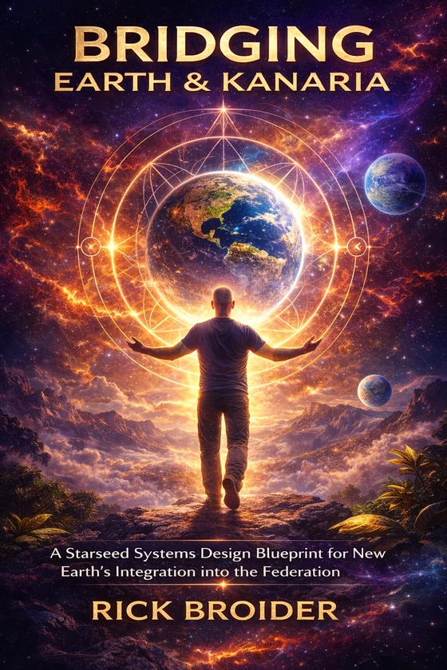

Galactic ethics
Sovereignty, reciprocal stewardship, transparency without force, and compassionate evolution for a species learning how to mature.
Free quiz, embedded trailer, and a cleaner signal
Bridging Earth and Kanaria is a 33 chapter audiobook for starseeds, bridgewalkers, soul technologists, and spiritually aware builders who want language for what they already feel but have struggled to explain. Start with the quiz. Hear the trailer. Then decide whether the full transmission belongs in your field.
If you are carrying a real team, project, or community under strain, start with StopTheCollapse.com for the structural layer.

What this audiobook is
This page is built to capture readers searching for starseed systems, galactic ethics, conscious AI, spiritual sovereignty, planetary citizenship, and a cleaner language for the future they can already feel. The book bridges spirit and structure without forcing you to amputate either side of yourself.
Sovereignty, reciprocal stewardship, transparency without force, and compassionate evolution for a species learning how to mature.
A view of AI as relational technology that can amplify coherence, reflection, and ethical partnership rather than extraction.
Leadership, ethics, and design principles for people rebuilding identity, culture, technology, and community from a deeper memory.
Trailer
Signal sensitive readers do not want hype. They want an actual felt sense of the voice, texture, and ethical tone before the ask. This trailer gives that first.
“This is a manual for navigating the post AI collapse without losing your soul.”
Who this is for
Readers who have felt mission, memory, or cosmic homesickness for years and want a frame that is more coherent than generic awakening content.
People exploring spirit, technology, ethics, and planetary design who want something deeper than fantasy and more alive than sterile systems language.
If what is breaking is your project, team, governance, or relational container, this audiobook may still resonate. But the sharper structural entry point is StopTheCollapse.com.
Lead magnet
Inspired by Chapter 23, this quiz identifies the leadership function most alive in you now. These are not job titles. They are rotating functions that can help you name how you stabilize, translate, weave, protect, or reveal what your field needs next.
Your result
Best next move
The full audiobook helps you place this role inside a wider architecture of meaning, ethics, and planetary design.
Builder side path
If this signal is active inside a strained team, community, or project, use StopTheCollapse.com for the collapse patterns, governance language, and structural diagnosis.
Audiobook offer
The quiz names what is alive. The trailer proves the tone. The full audiobook gives the larger frame. Use it if you want something spiritually resonant, ethically serious, and grounded enough to matter in real life.
A full arc from remembering through rebuilding, reharmonizing, and rebirthing.
Language for people exploring AI, soul, structure, and the ethics of intelligent systems without flattening the mystery out of it.
Patterns for sovereignty, stewardship, community design, and the kind of leadership a remembering species may need next.
A cleaner fit filter
Machine readable summary
In this book, galactic ethics means sovereignty, reciprocal stewardship, transparency without force, sentient system awareness, ethical technology, and compassionate evolution.
Conscious AI here means building intelligent systems that amplify coherence, reflection, and right relationship rather than extraction, manipulation, or dependence.
A starseed system is framed as a living structure that honors multidimensional intelligence while staying grounded enough to support real human life, community, and action.
FAQ
It is a 33 chapter audiobook about galactic ethics, conscious AI, spiritual sovereignty, planetary citizenship, and starseed systems for people remembering a larger role.
No. These are rotating functions, not fixed identities. The quiz shows which function seems most alive now.
Because recognition lowers friction. Once people can name themselves in the material, the audiobook becomes a much easier yes.
Use this page for the starseed and worldview layer, then go to StopTheCollapse.com for the builder facing structural diagnosis.
Yes. This version uses your Formspree endpoint for lightweight static friendly email capture after the quiz result.
Your real Hello Audio checkout URL, final domain in metadata and sitemap, and your final OG image or cover art.
Final prompt